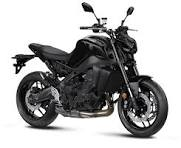

la historia de la mt 09
.jpg)
La MT-09, una creación de la reconocida marca de motocicletas japonesa Yamaha, es una máquina que combina la emoción pura del rendimiento con un diseño agresivo y una ingeniería de vanguardia. Desde su lanzamiento, ha ganado un seguimiento ferviente entre los entusiastas de las motocicletas deportivas y de alto rendimiento.
.jpg)
Lo primero que llama la atención de la MT-09 es su estética audaz y futurista. Con líneas angulares y una postura musculosa, esta moto proyecta una imagen de potencia y agilidad incluso cuando está parada. Los faros gemelos LED en la parte delantera le otorgan una apariencia distintiva y moderna que no pasa desapercibida en las calles.
Sin embargo, lo que realmente hace que la MT-09 brille es su rendimiento. Equipada con un motor de tres cilindros en línea de alta especificación, esta motocicleta ofrece una potencia impresionante en todo el rango de revoluciones. Desde una aceleración vertiginosa hasta una velocidad máxima emocionante, la MT-09 responde con una entrega de potencia suave y contundente que satisfará incluso a los pilotos más exigentes.

En resumen, la Yamaha MT-09 es mucho más que una simple motocicleta; es una expresión de pasión por la conducción y la innovación técnica. Ya sea que estés buscando emociones en la carretera o simplemente quieras disfrutar de un paseo dinámico, la MT-09 está lista para llevarte en un viaje inolvidable.